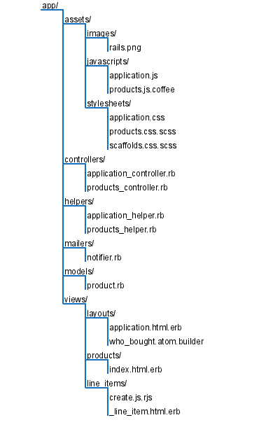

Figure 43. All Rails applications have this top-level directory structure.
Rails assumes a certain runtime directory layout and provides application and scaffold generators, which will create this layout for you. For example, if we generate my_app using the command rails new my_app, the top-level directory for our new application appears as shown in Figure 43, All Rails applications have this top-level directory structure.. Let’s start with the text files in the top of the application directory:
config.ru configures the Rack Webserver Interface, either to create Rails Metal applications or to use Rack Middlewares in your Rails application. These are discussed further in the Rails Guides.[36]
Gemfile specifies the dependencies of your Rails application. You have already seen this in use when the will_paginate plugin was added to the Depot application. Application dependencies also include the database, web server, and even scripts used for deployment.
Technically, this file is not used by Rails itself but rather by your application. You can find calls to the Bundler[37] in the config/boot.rb and config/application.rb files.
Rakefile defines tasks to run tests, create documentation, extract the current structure of your schema, and more. Type rake - at a prompt for the full list. Type rake - task to see a more complete description of a specific task.
README contains general information about the Rails framework itself.
|
|
Figure 43. All Rails applications have this top-level directory structure. |
Now let’s look at what goes into each directory (although not necessarily in order).
Most of our work takes place in the app directory. The main code for the application lives below the app directory, as shown in Figure 44, The main code for our application lives in the app directory.. We’ll talk more about the structure of the app directory as we look at the various Rails modules such as Active Record, Action Controller, and Action View in more detail later in the book.
|  |
|
Figure 44. The main code for our application lives in the app directory.
|
As we have seen in Section 7.2, Iteration B2: Unit Testing of Models, Section 8.4, Iteration C4: Functional Testing of Controllers, and Section 13.2, Iteration H2: Integration Testing of Applications, Rails has ample provisions for testing your application, and the test directory is the home for all testing-related activities, including fixtures that define data used by our tests.
As we saw in Section 17.2, Documenting What We Have Done, Rails provides the doc:app Rake task to generate documentation, which it places in the doc/ directory. In addition to this command, Rails provides other tasks that generate documentation: doc:rails will provide documentation for the version of Rails you are running, and doc:guides will provide usage guides. Before you build the guides, you will need to add the gem RedCloth (note: case is significant) to your Gemfile and run bundle install.
Rails also provides other document-related tasks. To see them all, enter the command rake -T doc.
The lib directory holds application code that doesn’t fit neatly into a model, view, or controller. For example, you may have written a library that creates PDF receipts that your store’s customers can download.[38] These receipts are sent directly from the controller to the browser (using the send_data method). The code that creates these PDF receipts will sit naturally in the lib directory.
The lib directory is also a good place to put code that’s shared among models, views, or controllers. Maybe you need a library that validates a credit card number’s checksum, that performs some financial calculation, or that works out the date of Easter. Anything that isn’t directly a model, view, or controller should be slotted into lib.
Don’t feel that you have to stick a bunch of files directly into the lib directory. Feel free to create subdirectories in which you group related functionality under lib. For example, on the Pragmatic Programmer site, the code that generates receipts, customs documentation for shipping, and other PDF-formatted documentation is in the directory lib/pdf_stuff.
In previous versions of Rails, the files in the lib directory were automatically included in the load path used to resolve require statements. This is now an option that you need to explicitly enable. To do so, place the following in config/application.rb:
config.autoload_paths += %W(#{Rails.root}/lib) |
Once you have files in the lib directory and the lib added to your autoload paths, you can use them in the rest of your application. If the files contain classes or modules and the files are named using the lowercase form of the class or module name, then Rails will load the file automatically. For example, we might have a PDF receipt writer in the file receipt.rb in the directory lib/pdf_stuff. As long as our class is named PdfStuff::Receipt, Rails will be able to find and load it automatically.
For those times where a library cannot meet these automatic loading conditions, you can use Ruby’s require mechanism. If the file is in the lib directory, you can require it directly by name. For example, if our Easter calculation library is in the file lib/easter.rb, we can include it in any model, view, or controller using this:
require "easter" |
If the library is in a subdirectory of lib, remember to include that directory’s name in the require statement. For example, to include a shipping calculation for airmail, we might add the following line:
require "shipping/airmail" |
You’ll also find an empty tasks directory under lib. This is where you can write your own Rake tasks, allowing you to add automation to your project. This isn’t a book about Rake, so we won’t go into it deeply here, but here’s a simple example. Rails provides a Rake task to tell you the latest migration that has been performed.
But it may be helpful to see a list of all the migrations that have been performed. We’ll write a Rake task that prints out the versions listed in the schema_migration table. These tasks are Ruby code, but they need to be placed into files with the extension rake. We’ll call ours db_schema_migrations.rake:
| rails31/depot_t/lib/tasks/db_schema_migrations.rake | |
namespace :db do |
|
desc "Prints the migrated versions" |
|
task :schema_migrations => :environment do |
|
puts ActiveRecord::Base.connection.select_values( |
|
'select version from schema_migrations order by version' ) |
|
end |
|
end |
|
We can run this from the command line just like any other Rake task:
depot> rake db:schema_migrations |
|
(in /Users/rubys/Work/...) |
|
20110711000001 |
|
20110711000002 |
|
20110711000003 |
|
20110711000004 |
|
20110711000005 |
|
20110711000006 |
|
20110711000007 |
Consult the Rake documentation at http://rubyrake.org/ for more information on writing Rake tasks.
As Rails runs, it produces a bunch of useful logging information. This is stored (by default) in the log directory. Here you’ll find three main log files, called development.log, test.log, and production.log. The logs contain more than just simple trace lines; they also contain timing statistics, cache information, and expansions of the database statements executed.
Which file is used depends on the environment in which your application is running (and we’ll have more to say about environments when we talk about the config directory in A Place for Configuration).
Thepublic directory is the external face of your application. The web server takes this directory as the base of the application. In here you place static (in other words, unchanging) files, such as stylesheets, JavaScript, and perhaps even some web pages.
If you find it helpful to write scripts that are run from the command line and perform various maintenance tasks for your application, the script directory is the place to put them.
This directory also holds the Rails script. This is the script that is run when you run the rails command from the command line. The first argument you pass to that script determines the function Rails will perform:
benchmarkerGenerates performance numbers on one or more methods in your application.
consoleAllows you to interact with your Rails application methods.
dbconsoleAllows you to directly interact with your database via the command line.
destroyRemoves autogenerated files created by generate.
generateA code generator. Out of the box, it will create controllers, mailers, models, scaffolds, and web services. You can also download additional generator modules from the Rails website.[39] Run generate with no arguments for usage information on a particular generator, for example: rails generate migration.
newGenerates Rails application code.
pluginHelps you install and administer plugins—pieces of functionality that extend the capabilities of Rails.
profilerCreates a runtime-profile summary of a URI request processed by your application.
runnerExecutes a method in your application outside the context of the Web. This is the noninteractive equivalent of rails console. You could use this to invoke cache expiry methods from a cron job or handle incoming email.
serverRuns your Rails application in a self-contained web server, using Mongrel (if it is available on your box) or WEBrick. We’ve been using this in our Depot application during development.
It probably isn’t a surprise that Rails keeps its temporary files tucked in the tmp directory. You’ll find subdirectories for cache contents, sessions, and sockets in here. Generally these files are cleaned up automatically by Rails, but occasionally if things go wrong, you might need to look in here and delete old files.
The vendor directory is where third-party code lives. Nowadays, this code will typically come from two sources.
First, Rails installs plugins into the directories below vendor/plugins. Plugins are ways of extending Rails functionality, both during development and at runtime.
Second, you can install Rails and all of its dependencies into the vendor directory, as we saw in Getting an Application Under Control
If you want to go back to using the system-wide version of gems, you can delete the vendor/cache directory.
The config directory contains files that configure Rails. In the process of developing Depot, we configured a few routes, configured the database, created an initializer, modified some locales, and defined deployment instructions. The rest of the configuration was done via Rails conventions.
Before running your application, Rails loads and executes config/environment.rb and config/application.rb. The standard environment that these files set up automatically includes the following directories (relative to your application’s base directory) in your application’s load path:
The app/controllers directory and its subdirectories
The app/models directory
The vendor directory and the lib contained in each plugin subdirectory
The directories app, app/helpers, app/mailers, app/services, and lib
Each of these directories is added to the load path only if it exists.
In addition, Rails will load a per environment configuration file. This file lives in the environments directory and is where you place configuration options that vary depending on the environment.
This is done because Rails recognizes that your needs, as a developer, are very different when writing code, testing code, and running that code in production. When writing code, you want lots of logging, convenient reloading of changed source files, in-your-face notification of errors, and so on. In testing, you want a system that exists in isolation so you can have repeatable results. In production, your system should be tuned for performance, and users should be kept away from errors.
The switch that dictates the runtime environment is external to your application. This means that no application code needs to be changed as you move from development through testing to production. In Chapter 16, Task K: Deployment and Production, you specified the environment on the rake command using a RAILS_ENV parameter and to Phusion Passenger using a RailsEnv line in your Apache configuration file. When starting WEBrick with the rails server command, you use the -e option:
depot> rails server -e development |
|
depot> rails server -e test |
|
depot> rails server -e production |
If you have special requirements, for example, if you favor having a staging environment, you can create your own environments. You’ll need to add a new section to the database configuration file and a new file to the config/environments directory.
What you put into these configuration files is entirely up to you. You can find a list of configuration parameters you can set in the Configuring Rails Applications guide you generated with the rake doc:guides command here. This information is also available online.[40]